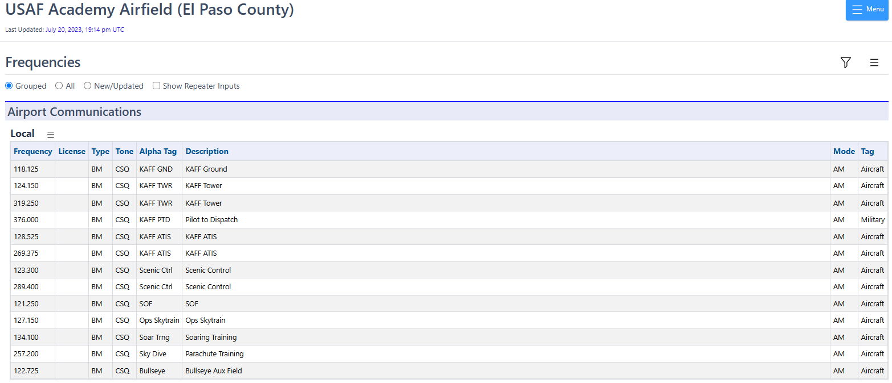
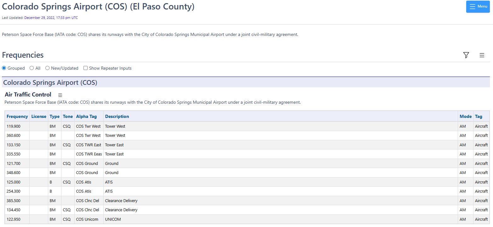
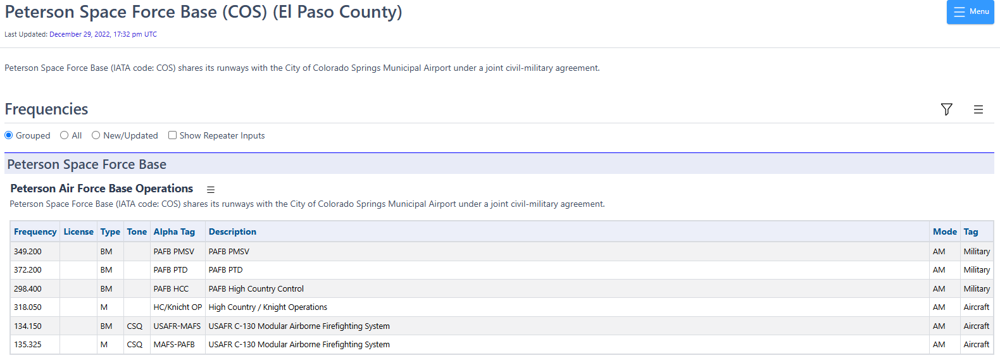
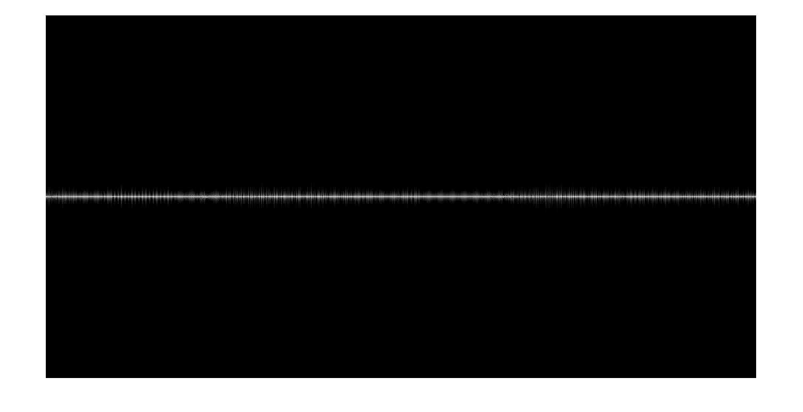
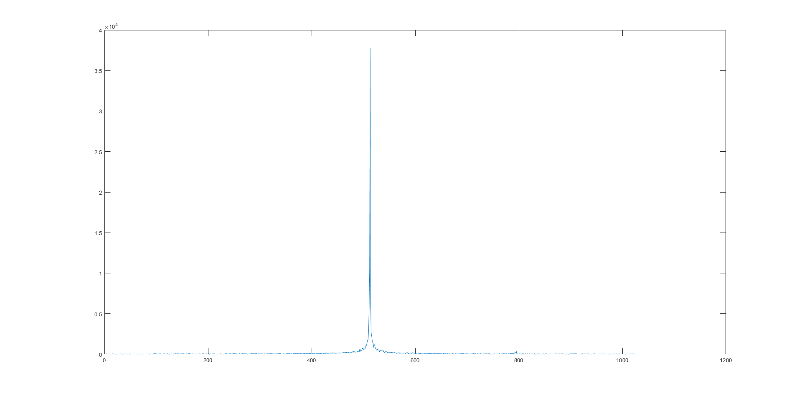
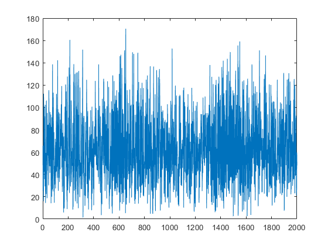

Lab 2: Capturing Signals and Displaying Signals#
(Adapted from Dr. John Pauly’s Stanford University EE179 course website: https://web.stanford.edu/class/ee179/Homework.html.)
Overview#
Last time you used an integrated program, gqrx, to control your SDR and listen to wideband commercial FM and narrowband FM used in police and fire radio. This week we’ll get a little closer to the hardware and learn how to control the SDRs more directly. We’ll use this to save data to a file, or stream it over a socket, so we can get signals into MATLAB or Python where we can get a better look at them.
(Remember - you can choose whether to use MATLAB or Python. The example code provided in this lab will be for MATLAB. If you are more comfortable with Python, the code is easily converted from MATLAB using GenAI, and whenever I reference MATLAB just think Python.)
Aims of the Lab#
This week we’ll look at other ways to control your SDR, how to get the data into MATLAB, and then display the spectrum. In the end you will be able to capture a signal, and display it’s spectrum as a plot, and a spectrogram which displays how the spectrum changes with time.
Command Line SDR Control#
You can control your SDR more directly with programs you run from the command line. This will allow you to see details about the SDR, capture data to a file, or stream it over the network via a socket. You can also do this using GNU Radio or GNU Radio Companion, the GUI version of GNU Radio (sort of like what Simulink is to MATLAB).
You should have everything you need since you downloaded radioconda for Lab 1. If not and you are using Windows, you can download and install the executables directly from Osmocom, the company that supports all of these projects. Here is the link to the Osmocom rtlsdr wiki page, and a link to the compiled binaries is:
Executables for the rtlsdr utilities
Choose the latest version compatible with your system. If you want to learn more, read through the Osmocom rtlsdr wiki page.
For Linux you can install gqrx using the apt manager, and this will automatically install all of gnuradio and the rtl utilities.
rtl_test#
The first program we’ll look at is rtl_test. This looks for the SDR and reports what it finds. This is the first program to use when debugging your SDR. To begin, open Windows Powershell or the command prompt and navigate to the folder where the tools are located in the radioconda library. For me the folder path was C:\Users\[username]\radioconda\Library\bin, but if that doesn’t get you to the correct folder then just search for rtl_test.exe.
> cd C:\Users\[username]\radioconda\Library\bin
After you have used the command prompt to navigate to the correct folder, run rtl_test.
> rtl_test
Found 1 device(s):
0: Realtek, RTL2838UHIDIR, SN: 00000001
Using device 0: Generic RTL2832U OEM
Found Elonics E4000 tuner
Supported gain values (14): -1.0 1.5 4.0 6.5 9.0 11.5 14.0 16.5 19.0 21.5 24.0 29.0 34.0 42.0
Info: This tool will continuously read from the device, and report if
samples get lost. If you observe no further output, everything is fine.
Reading samples in async mode...
^CSignal caught, exiting!
User cancel, exiting...
This runs continuously to test the data rate, until you stop it with a ^C (Control+C). There are a number of options, which you can find by typing in rtl_test -h and are listed below.
[-s samplerate (default: 2048000 Hz)]
[-d device_index (default: 0)]
[-t enable Elonics E4000 tuner benchmark]
[-p enable PPM error measurement]
[-b output_block_size (default: 16 * 16384)]
[-S force sync output (default: async)]
You can set the sampling rate with the “-s” option, which defaults to 2.048 MHz. One interesting option is “-p”, which tests what the actual sampling rate is. This will be slightly off of what you’ve asked for, and is the reason that the peaks in the spectra aren’t exactly where they should be when you use gqrx. This changes as the device heats up. This is what I get after about a minute or so
> rtl_test -p
Found 1 device(s):
0: Realtek, RTL2838UHIDIR, SN: 00000001
Using device 0: Generic RTL2832U OEM
Found Elonics E4000 tuner
Supported gain values (14): -1.0 1.5 4.0 6.5 9.0 11.5 14.0 16.5 19.0 21.5 24.0 29.0 34.0 42.0
Reporting PPM error measurement every 10 seconds...
Press ^C after a few minutes.
Reading samples in async mode...
real sample rate: 2048045 current PPM: 22 cumulative PPM: 22
real sample rate: 2047989 current PPM: -5 cumulative PPM: 8
real sample rate: 2048003 current PPM: 2 cumulative PPM: 6
real sample rate: 2047992 current PPM: -4 cumulative PPM: 4
real sample rate: 2048018 current PPM: 9 cumulative PPM: 5
real sample rate: 2048002 current PPM: 1 cumulative PPM: 4
^CSignal caught, exiting!
User cancel, exiting...
Samples per million lost (minimum): 0
This shows that my sampling rate is off by only 4 parts per million, or ppm. If it is significantly off, you can set a correction for this in gqrx.
rtl_sdr#
The next program is rtl_sdr. This starts the SDR up, then collects data, and writes it to a file. This also has a number of options:
> rtl_sdr
rtl_sdr, an I/Q recorder for RTL2832 based DVB-T receivers
Usage: -f frequency_to_tune_to [Hz]
[-s samplerate (default: 2048000 Hz)]
[-d device_index (default: 0)]
[-g gain (default: 0 for auto)]
[-b output_block_size (default: 16 * 16384)]
[-n number of samples to read (default: 0, infinite)]
[-S force sync output (default: async)]
filename (a '-' dumps samples to stdout)
You set the center frequency with the “-f” switch, specified in Hz (you will get a lot of practice counting zeros!). The “-g” switch sets the gain in dB. You can set it to anything, but you’ll get the closest value from the list of supported gains that you saw with rtl_test. For example to collect 10 seconds of data centered at 120 MHz (an AM air band used for air traffic control), you would run:
> rtl_sdr -f 120000000 -g 40 -n 20480000 ab120_10s.dat
Found 1 device(s):
0: Realtek, RTL2838UHIDIR, SN: 00000001
Using device 0: Generic RTL2832U OEM
Found Elonics E4000 tuner
Sampling at 2048000 S/s.
Tuned to 120000000 Hz.
Tuner gain set to 42.00 dB.
Reading samples in async mode...
User cancel, exiting...
The program terminates by itself when it has collected enough data.
Once we’ve saved the data to a file, we can load it into MATLAB. The SDR saves the data as interleaved 8-bit unsigned IQ samples (I, Q, I, Q,…). The following m-file
will create a signed sequence of de-interleaved IQ values and save it as a complex-valued vector in MATLAB. It looks like this:
function y = loadFile(filename)
% y = loadFile(filename)
%
% reads complex samples from the rtlsdr file
%
fid = fopen(filename,'rb');
y = fread(fid,'uint8=>double');
y = y-127;
y = y(1:2:end) + i*y(2:2:end);
Airband AM Signals#
The main part of the lab is to capture and decode AM signals in the air band, with is right above the commercial FM band we were decoding last week. There is a band from 108-118 MHz that mostly has navigation beacons that identify themselves by Morse code. Then from 118-137 MHz there are several bands used for communication between aircraft and the ground. Communications in these bands uses AM modulation. This is because when two users try to talk on the same channel, you hear both of them with AM. With FM, you hear only the stronger of the two, or something completely intelligible if both are the same strength. With air traffic control, it is important to hear everyone that is out there!
The USAFA Airfield transmits on these frequencies:

If you leave USAFA, you can also hear traffic from the Colorado Springs Airport and Peterson SFB. Since both use the same runways, they both use the same International Air Transport Association (IATA) code of COS. However, they do not use all of the same radio frequencies. For the main civilian airport, the frequencies are:

The military side has some additional frequencies:

Choose a frequency where you might expect to get a signal. The ATIS frequencies are good initial candidates, because these continuously transmit information about the airport and how to contact them. The other frequencies, such as the air traffic control frequencies, are more interesting but are not always in use. Often a transmission lasts just a few seconds and can be hard to capture.
You also want to make sure the frequency you pick is a good match for your SDR antenna. If you are using the monopole antenna (silver telescoping), you want the antenna length to be close to a quarter wavelength and to stick your antenna to a metal surface to provide a ground plane. If you are using the dipole antenna (black telescoping), you want the antenna length to be close to half of a wavelength of your desired signal. Small adjustments to the frequency can help (+/- a few kHz).
Use gqrx to see if you can find any activity.
You see a couple of frequencies in use. The one that is on continuously is an ATIS signal. The others are planes and towers talking to each other. Note the gain you use here, so you can set it to be the same for your capture.
Once you know there is a signal out there, capture 10 seconds of data, and save it to a file. Close gqrx to free up the SDR, and then capture the data with
> rtl_sdr -f 128525000 -n 20480000 ab.dat
where I have chosen 125.525 MHz. You may want to set it to something else. Don’t set the frequency exactly to the frequency you want to acquire, because the receiver produces an artifact at DC. This is the spike you always see at the middle of the spectrum.
A sample file is available at
You can use this file if you are having trouble finding signals to capture. It is sampled at 2.048 MHz and is centered at 128.525 MHz. The USAFA ATIS signal is there.
Once you have the data, we will load it into MATLAB to look at it. Start up MATLAB, and change to the directory where loadFile.m and the data file are. Load the data file with
>> d = loadFile('Lab2_128_10s.dat')
The first thing to note is that just 10 seconds of RF is a lot of data! It is hard to tell if we have anything, or how to extract it. What we will do is make something like the waterfall plot that you see in gqrx, called a spectrogram. What this does is compute the spectrum of blocks of the signal, and displays an image of how this changes over time. A basic spectrogram program is provided here
It is msg.m for “my spectrogram”. The help information is
>> help msg
msg(x,n0,nf,nt,dbf)
Computes and displays a spectrogram
x -- input signal
n0 -- first sample
nf -- block size for transform
nt -- number of time steps (blocks)
dbf -- dynamic range in dB (default 40)
This extracts a segment of x starting at n0, of length nf*nt
The image plot is in dB, and autoscaled. This can look very noisy
if there aren't any interesting signals present.
This takes an input signal starting at sample n0, and computes the spectrum of nt segments of the signal, each of length nf. The result is displayed as an image, with time going horizontally, and frequency vertically. The center frequency is in the middle of the plot. For example, for the data provided above, we can look at the first second of data, by looking at 2000 blocks each of length 1024 samples (2048000 total samples, or one second at the 2.048 sampling rate). The results is
>> d = loadFile('ab1335_10s.dat');
>> msg(d,1,1024,2000);
Unless you have a very big display, you’ll get an error message that the image doesn’t fit, and was scaled down. The result looks like this

We see one distinct signal across the middle. The msg.m file will return the data that is plotted if you assign the output to a variable
>> ds = msg(d,1,1024,2000);
We can plot the spectrum at a time of 0.5 seconds by plotting column 1000,
>> plot(abs(ds(:,1000)));

You can see that there is a strong signal at sample 313 (mouse over the plot to find the sample number at the signal’s peak). You can plot that signal by plotting a row of the data,
>> plot(abs(ds(313,:)));

What you see is a conventional AM signal. The transmitted signal is a constant bias plus the voice signal being transmitted.
Assignment#
For your assignment, capture some AM data in the Airband, plot a segment of it in the time domain using MATLAB or Python (or GNU Radio Companion, if you figured that out!), save a screen shot of the signal plot to a PDF file, upload it to Gradescope, and answer the questions on Gradescope.
If you have trouble capturing your own data, you may use this data set:
This is a capture of the Airband for 10 seconds at a 2.048M sampling rate. There are at least three signals at various times in this data set. You have ten seconds of data, so you can look later in the signal by increasing n0 in the msg function. For example, to start at 5 seconds, n0 should be 5*2048000.
Extra Fun!#
You can also use msg.m to decode the signals. Each column in the image is a sample of the spectrum in time. If we want to sample at 8kHz, we need blocks that are 2048000/8000 = 256 samples. In this case the entire data set is 80,000 samples. You may want to comment out the imshow line, and then do
>> dd = msg(d,1,256,80000);
Find the row in dd that corresponds to your signal, take the absolute value, scale it to a maximum amplitude of one, and then play it through your sound card. You should hear the audio.
>> dx = abs(dd(N,:))
>> dx = dx/max(dx);
>> sound(dx,8000);
Next time we’ll look at better ways to do this using modulation and decimation.